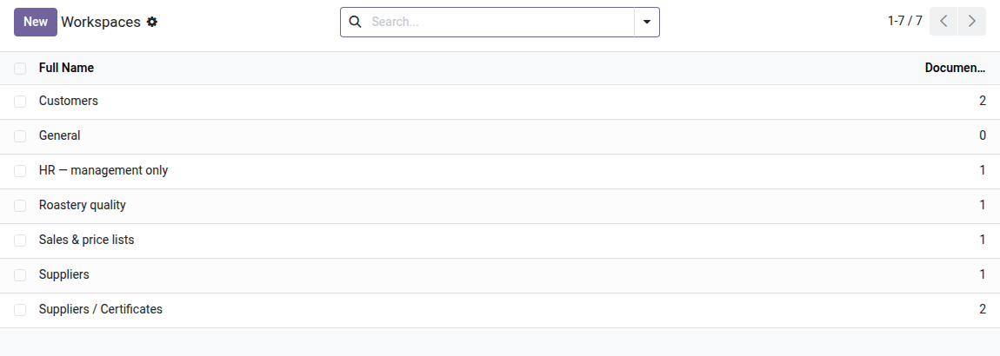
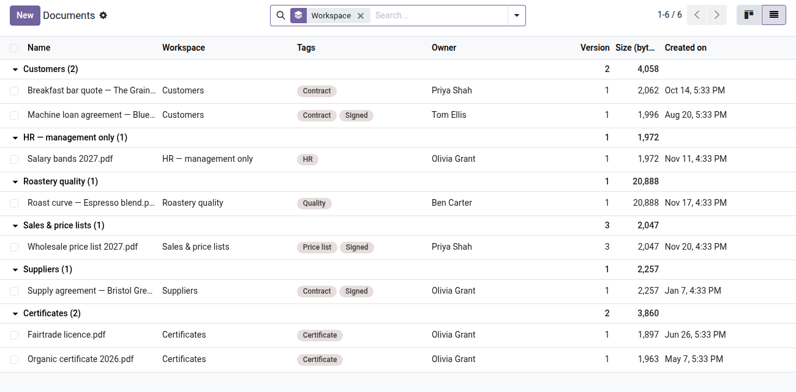
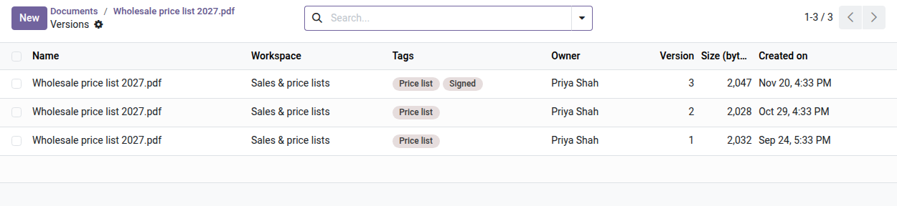
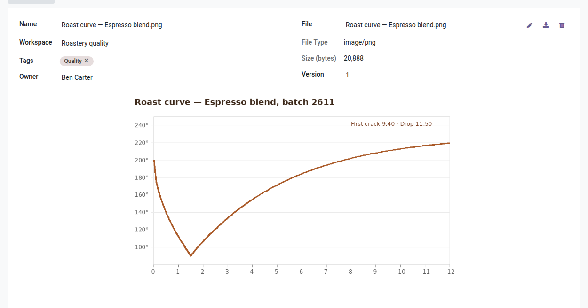

Organize all your files in isolated workspaces: versioning, preview, links to business records and per-workspace access rights — right inside Odoo Community.
On Odoo Community, documents live scattered as attachments buried in records, with no filing, no version history, no control over who sees what. Finding the right contract, knowing which is the latest version, keeping one department out of another's files: none of this exists natively. Odoo Enterprise's DMS (Documents) fills that gap — this app brings it to your Community.
ir.attachment) and carries its metadata: workspace, tags, owner, type, size.Suppliers and their certificates, customers, price lists, roastery quality, and an HR space that only management can open.

The price list in its third version: tags, owner, size and the PDF itself, readable without downloading it.
Contracts, certificates, price list, roast curve: one list grouped by workspace, with tags, owner, version and date.

Each new version keeps the previous one, which can be reopened and restored in one click.

The roast curve sent by the lab opens full width on the document form.

Two separate apps work alongside it: Electronic Signature (oski_sign) to have contracts signed online, and Portal Document Upload (oski_portal_upload) for documents requested from customers through their portal. They do not need this DMS, and this DMS does not need them.
Open-source app, LGPL-3 license — compatible with Odoo 19.0 Community & Enterprise. No external dependency. Support: apps@odooskills.com.